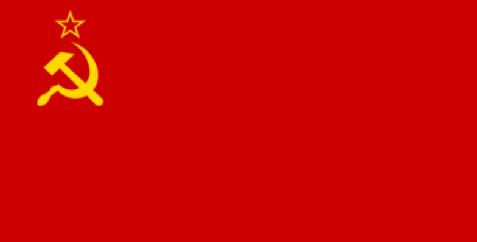
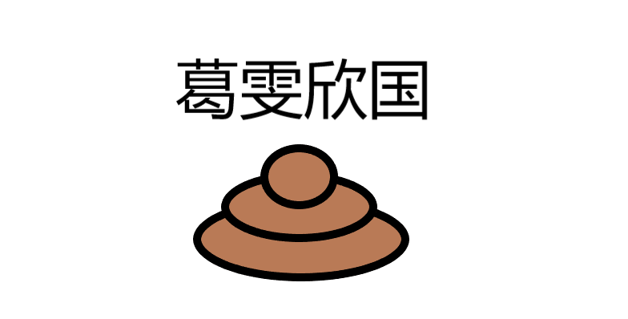
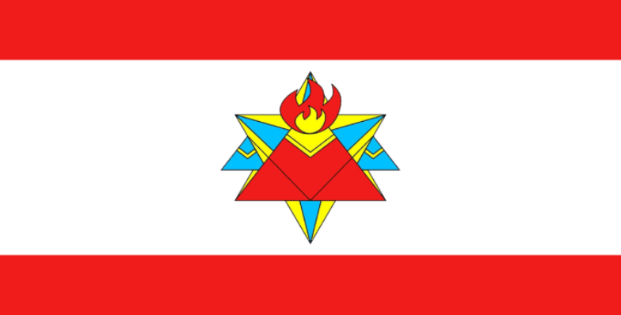
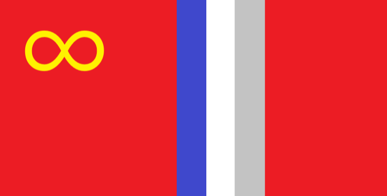
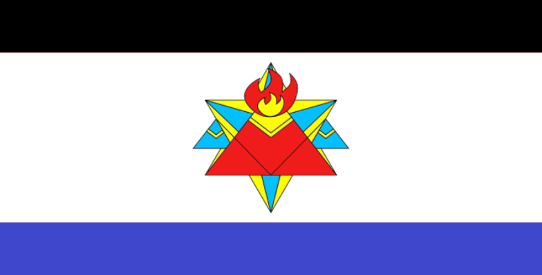

注：萨尔瓦多世界线为虚构作品，与现实任何主体无关。
萨尔瓦多世界线
萨尔瓦多世界线是萨尔瓦多社区创作的架空历史。这里展示的萨尔瓦多世界线存在于一个虚拟维度中，与现实任何实体无关。
| 目录 |
| 1 萨尔瓦多世界线国家列表 |
| 2 萨尔瓦多世界线社区列表 |
| 3 萨尔瓦多世界线人物列表 |
萨尔瓦多世界线国家列表
这里展示萨尔瓦多世界线所有的国家
| 国家简称 | 国家全称 | 国旗 | 首都 | 萨尔瓦多代码 | 国歌 |
| 萨尔瓦多 | 萨尔瓦多帝国 | 萨尔瓦多城 | SA | 《神圣的帝国》 | |
| 苏联 | 苏维埃社会主义共和国联盟 |  | 莫斯科 | AU | 《牢不可破的联盟》 |
| 德国 | 德意志民主共和国 | 柏林 | DE | 《希希特只有一个蛋》 | |
| 葛雯欣国 | 葛雯欣国 |  | 葛雯欣城 | DB | 《三朵鲜花插在牛粪上》 |
| 爱坤（IKUN）国 | 蔡徐坤爱坤（IKUN）团体人民共和国 |  |
只因城 | CXK | 《只因你太美》 |
| 美国 | 美利坚合众国 | 华盛顿 | AM | 《星条旗永不落》 | |
| 灯纟火国 | 灯纟火民主共和国 |  | 邵阳 | XD | 《萤火虫》 |
| 希吕国 | 希吕民主共和国 |  | 无限之地 | XE | 《无限之歌》 |
| 希唐国 | 希唐国 |  | 马彬城 | XK | 《马彬城快乐地飞翔》 |
| 希卜国 | 希卜国 | 希卜城 | XZ | 《希卜国》 |
萨尔瓦多世界线社区列表
| 社区名称 | 条目 |
| 攀岩社区 | 条目 |
| 萨尔瓦多希顶社区 | 条目 |
| 狼人杀社区 | 条目 |
萨尔瓦多世界线人物列表
条目：萨尔瓦多世界线人物列表